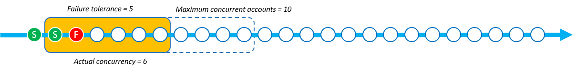
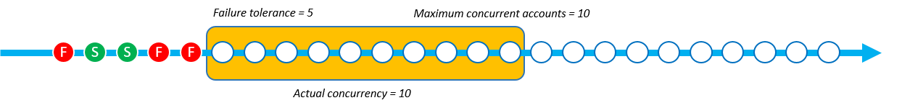

Les traductions sont fournies par des outils de traduction automatique. En cas de conflit entre le contenu d'une traduction et celui de la version originale en anglais, la version anglaise prévaudra.
Paramètre du mode simultané
Le Mode simultané renvoit à un paramètre StackSetOperationPreferences qui vous permet de choisir le comportement du niveau de simultanéité lors des opérations d'ensemble de piles. Vous pouvez choisir parmi les modes suivants :
-
Tolérance stricte aux pannes : cette option réduit dynamiquement le niveau de simultanéité afin de garantir que le nombre de comptes défaillants ne dépasse jamais la valeur de Tolérance aux pannes + 1. La simultanéité réelle initiale est définie sur la valeur la plus basse entre la valeur du Nombre maximal de comptes en parallèle, ou la valeur de Tolérance aux pannes + 1. La simultanéité réelle est ensuite réduite proportionnellement au nombre de défaillances. Il s'agit du comportement de par défaut.
-
Tolérance souple aux pannes : cette option dissocie la Tolérance aux pannes de la simultanéité réelle. Cela permet aux opérations d'ensemble de piles de s'exécuter au niveau de simultanéité défini par la valeur Nombre maximal de comptes en parallèle, quel que soit le nombre de défaillances.
La Tolérance stricte aux pannes réduit la vitesse de déploiement en cas de défaillance des opérations d'ensemble de piles, car la simultanéité diminue à chaque défaillance. La Tolérance souple aux pannes place la priorité à la vitesse de déploiement tout en tirant parti des capacités de sécurité d'AWS CloudFormation. Cela vous permet d'examiner et de résoudre les défaillances des opérations d'ensemble de piles pour les problèmes courants tels que ceux liés aux ressources existantes, aux quotas de service et aux autorisations.
Pour plus d'informations sur les échecs des opérations de StackSets pile, consultezRaisons les plus courantes de l'échec de l'opération de pile.
Pour plus d'informations sur le Nombre maximal de comptes en parallèle et la Tolérance aux pannes, consultez Options d'opération d'ensemble de piles.
Fonctionnement de chaque mode simultané
Les images ci-dessous fournissent une représentation visuelle du fonctionnement de chaque Mode simultané lors d'une opération d'ensemble de piles. La chaîne de nœuds représente un déploiement vers une seule Région AWS et chaque nœud est un Compte AWS cible.
- Tolérance stricte aux pannes
-
Lorsqu'une opération d'ensemble de piles utilisant la Tolérance stricte aux pannes contient la valeur de Tolérance aux pannes définie sur 5 et la valeur du Nombre maximal de comptes en parallèle définie sur 10, la simultanéité réelle est de 6. La simultanéité réelle est de 6, car cette valeur de Tolérance aux pannes de 5 + 1 est inférieure à la valeur du Nombre maximal de comptes en parallèle.
L'image suivante montre l'impact de la valeur de Tolérance aux pannes sur la valeur du Nombre maximal de comptes en parallèle, ainsi que l'impact de ces deux valeurs sur la simultanéité réelle de l'opération d'ensemble de piles :

Lorsque le déploiement commence et que des instances de pile sont défaillantes, la simultanéité réelle est réduite pour garantir une expérience de déploiement sûre. La simultanéité réelle passe de 6 à 5 en cas d' StackSets échec du déploiement d'une instance de pile.

Le mode Tolérance stricte aux pannes réduit la simultanéité réelle proportionnellement au nombre d'instances de pile défaillantes. Dans l'exemple suivant, la simultanéité réelle passe de 5 à 3 en cas d' StackSets échec du déploiement de 2 instances de pile supplémentaires, portant le total des instances de pile défaillantes à 3.

StackSets échoue à l'opération d'ensemble de piles lorsque le nombre d'instances de pile défaillantes est égal à la valeur définie de Tolérance de défaillance +1. Dans l'exemple suivant, l'opération StackSets échoue lorsqu'il y a 6 instances de pile défaillantes et que la valeur de tolérance de défaillance est de 5.

Dans cet exemple, 9 instances de pile StackSets ont été déployées (3 ont réussi et 6 ont échoué) avant d'arrêter l'opération de stack set.
- Tolérance souple aux pannes
-
Lorsqu'une opération d'ensemble de piles utilisant la Tolérance souple aux pannes a la valeur de Tolérance aux pannes définie sur 5 et la valeur du Nombre maximal de comptes en parallèle définie sur 10, la simultanéité réelle est de 10.

Lorsque le déploiement commence et que des instances de pile sont défaillantes, la simultanéité réelle ne change pas. Dans l'exemple suivant, une opération de pile est défaillante, mais la simultanéité réelle reste de 10.

La simultanéité réelle reste de 10 même après deux défaillances d'instances de pile supplémentaires.
StackSets échoue à l'opération d'ensemble de piles lorsque les instances de pile défaillantes dépassent la valeur de tolérance de défaillance. Dans l'exemple suivant, l'opération StackSets échoue lorsqu'il y a 6 instances de pile défaillantes et que le nombre de tolérances d'échec est de 5. Toutefois, l'opération ne se terminera pas tant que les autres opérations de la file d'attente de simultanéité ne seront pas terminées.

StackSets continue de déployer des instances de pile qui se trouvent déjà dans la file d'attente de simultanéité. Cela signifie que le nombre d'instances de piles défaillantes peut être supérieur à la Tolérance aux pannes. Dans l'exemple suivant, 8 instances de pile sont défaillantes, car la file d'attente de simultanéité avait encore 7 opérations à effectuer, même si l'opération d'ensemble de piles avait atteint la Tolérance aux pannes de 5.
![Il s'agit d'une opération de pile avec la Tolérance souple aux pannes. La Tolérance aux pannes est définie sur 5 et le Nombre maximal de comptes en parallèle est défini sur 10. Au total, 8 opérations de pile sont défaillantes et la simultanéité réelle est restée de 10. Au total, 8 instances de pile sont défaillantes, car la file d'attente de simultanéité devait encore effectuer 7 opérations, même après avoir dépassé le seuil de tolérance aux pannes de 5. Une fois le seuil de tolérance aux pannes atteint et les opérations de la file d'attente de simultanéité terminées, l'opération d'ensemble de piles est défaillante.](images/concurrency-soft-failure-tolerance-5.png)
Dans cet exemple, 15 instances de pile StackSets ont été déployées (7 ont réussi et 8 ont échoué) avant d'arrêter l'opération de pile.
Sélection de la tolérance stricte aux pannes et de la tolérance souple aux pannes en fonction de la vitesse de déploiement
Sélection des modes de Tolérance stricte aux pannes et de Tolérance souple aux pannes dépend de la vitesse préférée de déploiement de votre ensemble de piles et du nombre autorisé de défaillances de déploiement.
Les tableaux suivants montrent comment chaque mode simultané gère une opération d'ensemble de piles défaillante lors de la tentative de déploiement de 1 000 instances de piles au total. Dans chaque scénario, la valeur de tolérance aux pannes est fixée à 100 instances de pile et la valeur du Nombre maximal de comptes en parallèle est fixée à 250 instances de pile.
Bien que les files d'attente soient StackSets en fait une fenêtre coulissante (voirFonctionnement de chaque mode simultané), cet exemple montre le fonctionnement par lots pour démontrer la rapidité de chaque mode.
Tolérance stricte aux pannes
Cet exemple d'utilisation du mode de Tolérance stricte aux pannes réduit la simultanéité réelle par rapport au nombre de défaillances survenues dans chaque lot précédent. Chaque lot comporte 20 instances défaillantes, ce qui réduit ensuite la simultanéité réelle du lot suivant de 20 % jusqu'à ce que l'opération d'ensemble de piles atteigne la valeur de Tolérance aux pannes de 100.
Dans le tableau suivant, la simultanéité initiale réelle du premier lot est de 101 instances de pile. La simultanéité réelle est de 101, car il s'agit de la valeur inférieure du Nombre maximal de comptes en parallèle (250) ou de la Tolérance aux pannes (100) + 1. Chaque lot contient 20 déploiements d'instances de pile défaillants, ce qui réduit ensuite la simultanéité réelle de chaque lot suivant de 20 instances de pile.
| Tolérance stricte aux pannes | Lot 1 | Lot 2 | Lot 3 | Lot 4 | Lot 5 | Lot 6 |
|---|---|---|---|---|---|---|
| Nombre réel de simultanéités | 101 | 81 | 61 | 41 | 21 | - |
| Nombre d'instances défaillantes | 20 | 20 | 20 | 20 | 20 | - |
| Nombre d'instances de piles réussies | 81 | 61 | 41 | 21 | 1 | - |
L'opération utilisant la Tolérance stricte aux pannes a permis de réaliser 305 déploiements d'instances de pile en 5 lots au moment où l'opération d'ensemble de piles a atteint la Tolérance aux pannes de 100 instances de pile. L'opération d'ensemble de piles déploie avec succès 205 instances de pile avant d'échouer.
Tolérance souple aux pannes
Cet exemple d'utilisation du mode de Tolérance souple aux pannes maintient le même nombre de simultanéités réelles définies par la valeur Nombre maximal de comptes en parallèle de 250 instances de pile, quel que soit le nombre d'instances défaillantes. Les opérations d'ensemble de piles conservent la même simultanéité réelle jusqu'à ce qu'elle atteigne la valeur de Tolérance aux pannes de 100 instances.
Dans le tableau suivant, la simultanéité initiale réelle du premier lot est de 250 instances de pile. La simultanéité réelle est de 250 car la valeur maximale des comptes simultanés est définie sur 250 et le mode de tolérance de défaillance souple StackSets permet d'utiliser cette valeur comme simultanéité réelle, quel que soit le nombre de défaillances. Même s'il y a 50 défaillances dans chacun des lots pour cet exemple, la simultanéité réelle demeure inchangée.
| Tolérance souple aux pannes | Lot 1 | Lot 2 | Lot 3 | Lot 4 | Lot 5 | Lot 6 |
|---|---|---|---|---|---|---|
| Nombre réel de simultanéités | 250 | 250 | - | - | - | - |
| Nombre d'instances défaillantes | 50 | 50 | - | - | - | - |
| Nombre d'instances de piles réussies | 200 | 200 | - | - | - | - |
En utilisant la même valeur Nombre maximal de comptes en parallèle et la même valeur de Tolérance aux pannes, l'opération utilisant le mode de Tolérance souple aux pannes a permis de réaliser 500 déploiements d'instances de pile en 2 lots. L'opération d'ensemble de piles déploie avec succès 400 instances de pile avant d'échouer.
Choix de votre mode simultané à l'aide d'AWS Management Console
Vous pouvez choisir le Mode simultané pour les ensembles de piles nouveaux ou existants sur la page Définir les options de déploiement.

Pour plus d'informations sur la création de nouveaux ensembles de piles à l'aide d'AWS Management Console, consultez Créer un ensemble de piles.
Pour plus d'informations sur la mise à jour des ensembles de piles à l'aide d'AWS Management Console, consultez Mettre à jour votre ensemble de piles à l'aide de la console AWS CloudFormation.
Pour plus d'informations sur la suppression des ensembles de piles à l'aide d'AWS Management Console, consultez Supprimer un ensemble de piles à l'aide de l’AWS Management Console.
Choix de votre mode simultané à l'aide d'AWS Command Line Interface
Vous pouvez utiliser le ConcurrencyMode paramètre avec les StackSets commandes suivantes :
Ces commandes contiennent un paramètre existant appelé --operation-preferences qui peut utiliser le paramètre ConcurrencyMode. ConcurrencyMode peut être défini sur l'une des valeurs suivantes :
-
STRICT_FAILURE_TOLERANCE -
SOFT_FAILURE_TOLERANCE
L'exemple suivant crée une instance de pile en utilisant le ConcurrencyMode STRICT_FAILURE_TOLERANCE, avec un ensemble FailureToleranceCount de 10 et un ensemble MaxConcurrentCount de 5 :
aws cloudformation create-stack-instances \ --stack-set-nameexample-stackset\ --accounts123456789012\ --regionseu-west-1\ --operation-preferences ConcurrencyMode=STRICT_FAILURE_TOLERANCE,FailureToleranceCount=10,MaxConcurrentCount=5
Pour plus d'informations sur la création de nouveaux ensembles de piles à l'aide d'AWS Command Line Interface (CLI), consultez Créer un ensemble de piles.
Pour plus d'informations sur la mise à jour des ensembles de piles à l'aide d'AWS CLI, consultez Mettez à jour votre ensemble de piles à l'aide du AWS CLI.
Pour plus d'informations sur la suppression des ensembles de piles à l'aide d'AWS CLI, consultez Supprimer un ensemble de piles à l'aide de l’AWS CLI.